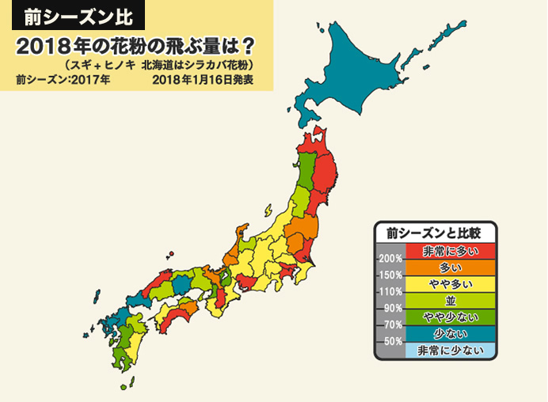
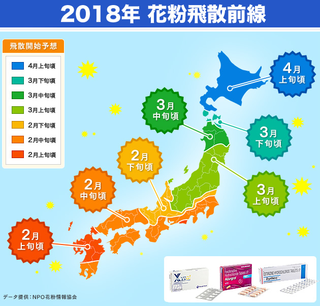

<?xml version="1.0" encoding="UTF-8"?><rss version="2.0"
	xmlns:content="http://purl.org/rss/1.0/modules/content/"
	xmlns:wfw="http://wellformedweb.org/CommentAPI/"
	xmlns:dc="http://purl.org/dc/elements/1.1/"
	xmlns:atom="http://www.w3.org/2005/Atom"
	xmlns:sy="http://purl.org/rss/1.0/modules/syndication/"
	xmlns:slash="http://purl.org/rss/1.0/modules/slash/"
	>

<channel>
	<title>アレルギー &#8211; くすりエクスプレスの教えてQ＆A</title>
	<atom:link href="https://www.kusuriexpress.com/qna/category/allergy/feed/" rel="self" type="application/rss+xml" />
	<link>https://www.kusuriexpress.com/qna</link>
	<description>多くの方が気になる病気・症状の質問集</description>
	<lastBuildDate>Mon, 09 Jul 2018 01:47:48 +0000</lastBuildDate>
	<language>en-GB</language>
	<sy:updatePeriod>hourly</sy:updatePeriod>
	<sy:updateFrequency>1</sy:updateFrequency>
	<generator>https://wordpress.org/?v=4.7.5</generator>
	<item>
		<title>花粉症対策と治療薬</title>
		<link>https://www.kusuriexpress.com/qna/%e8%8a%b1%e7%b2%89%e7%97%87%e5%af%be%e7%ad%96%e3%81%a8%e6%b2%bb%e7%99%82%e8%96%ac/</link>
		<pubDate>Thu, 07 Jun 2018 06:59:06 +0000</pubDate>
		<dc:creator><![CDATA[くすりエクスプレス]]></dc:creator>
				<category><![CDATA[アレルギー]]></category>
		<category><![CDATA[花粉症]]></category>
		<category><![CDATA[アレグラ]]></category>
		<category><![CDATA[ザイザル]]></category>
		<category><![CDATA[ジルテック]]></category>
		<category><![CDATA[スギ花粉]]></category>

		<guid isPermaLink="false">https://www.kusuriexpress.com/qna/?p=3260</guid>
		<description><![CDATA[頭がボーっとしたり、化粧がくずれたり、なにかと悩ましい花粉症 花粉症は50年前にはほとんど誰もかかっていなかった病気ですが、いまや日本人の25％が「私も」という国民病になってしまいました。その原因については、戦後に国がやたらに杉を植林したせいだとか、国民の食生活が変化してアレルギーになりやすい体質の人が増えたからだ、などいわれています。... <span class="more">続きを読む</span>]]></description>
				<content:encoded><![CDATA[<h3>頭がボーっとしたり、化粧がくずれたり、なにかと悩ましい花粉症</h3>
<p>花粉症は50年前にはほとんど誰もかかっていなかった病気ですが、いまや日本人の25％が「私も」という国民病になってしまいました。その原因については、戦後に国がやたらに杉を植林したせいだとか、国民の食生活が変化してアレルギーになりやすい体質の人が増えたからだ、などいわれています。</p>
<p>しかし原因がどうであれいったん花粉症になってしまうと、毎年花粉が飛散するシーズンの2～3ケ月は、くしゃみや鼻づまり、鼻水、涙に悩まされる生活をしいられることになります。</p>
<p>その間、家事や仕事、勉強の集中力が落ちたり、外出や人づきあいに支障が出たりと、いろいろな生活上の不便にみまわれます。女性は鼻水や涙で化粧がくずれるのも悩みの種です。<br />
花粉症仲間がいくら増えても、１人ひとりのつらい症状が軽くなるわけではありません。</p>
<p>花粉症は花粉という無害なものを有害物質と認識してしまう免疫反応の勘ちがいが原因でおきます。いったん勘違いしてしまうと、花粉が目や鼻から入るたびにそれを攻撃するための抗体が作られていきます。</p>
<p>そして何年か花粉を浴び続けて抗体がじゅうぶん作られると、花粉が侵入したときにすばやく反応するようになります。くしゃみで花粉を吹き飛ばしたり、涙で洗い流そうとするのです。これが花粉症の症状です。</p>
<p>いちどできた抗体をなくすることはできないので、症状をおさえるには花粉を浴びないか、花粉を浴びても抗体反応がおきないような薬(抗アレルギー薬)をのむかしかありません。</p>
<h3>家の中に花粉を入れない</h3>
<p>花粉を浴びない工夫で案外忘れられているのは、花粉を家に入れないということです。外出しなくても家の中に花粉がたくさん持ち込まれていると、症状はなかなか治まりません。</p>
<p>洗濯ものがよく乾く日は花粉がよく飛散している日でもあります。洗濯ものを取りこむときは、布団たたきでよくたたいて花粉を落とすようにしましょう。もちろんそのときはマスクをしてください。</p>
<p>外出するときは表面がツルっとしたスプリンコートなどを着て、玄関に入る前に花粉をたたき落としておくと、家の中に持ち込まれる花粉の量が少なくなります。室内の湿度が高いと花粉は床に落ちるので、加湿器などで部屋を加湿して掃除機で吸い取るのも効果があります。</p>
<p>ただし掃除機のフィルターは花粉を通さないものでないいといけません。掃除機はソファーなど高いところからかけて、床は最後に吸い取ります。</p>
<h3>抗ヒスタミン剤で症状をおさえる</h3>
<p>花粉症の症状は抗体反応でヒスタミンという物質が目や鼻で放出されることでおきます。ヒスタミンの放出をおさえて症状をやわらげるのが抗ヒスタミン剤です。</p>
<p>マスクでは防ぎきれないのが花粉です。抗ヒスタミン薬を内服することで体が花粉に過剰反応を起こすことがなく、症状の鼻づまり、涙目、目のかゆみ、鼻水、くしゃみなどを大幅に緩和することができます。</p>
<p>抗ヒスタミン剤には、<a href="../../../../products/%E3%82%B6%E3%82%A4%E3%82%B6%E3%83%AB5mg/index.html">ザイザル</a>、<a href="../../../../products/%E3%82%B8%E3%83%AB%E3%83%86%E3%83%83%E3%82%AF10mg/index.html">ジルテック</a>、<a href="../../../../products/%E3%82%A2%E3%83%AC%E3%82%B0%E3%83%A9-1%E7%AE%B1/index.html">アレグラ</a>などがあります。これらの薬は、１日１回のめば24時間効果が続き、眠くなることはほとんどありません。</p>
<h3>花粉症対策グッズを活用しよう</h3>
<p>花粉症用のメガネ(ゴーグル)やマスクは最近、花粉ガード率の高い形態のものが開発、販売されています。髪の毛は花粉がつきやすいところなので、帽子をかぶるのも効果があります。<br />
帽子をかぶってゴーグルとマスクをすると銀行に入りにくくなりますが、人目を気にしている場合ではありません。</p>
<p>車の運転中にくしゃみや鼻水がでるとたいへん危険なので、車内によく掃除機をかける、自動車用の空気清浄器をつけるなどで花粉対策をしましょう。</p>
<h3>睡眠をじゅうぶんとって体調管理に気をつける</h3>
<p>寝不足は花粉症の症状を悪化させますし、風邪もひきやすくなります。花粉症と風邪が併発するとお互いの症状を悪化させるし、くしゃみや鼻水が花粉のせいなのか風邪のせいなのかわからないという、ややこしいことになります。</p>
<p>さいわい花粉対策のマスクなどは風邪やインフルエンザの予防対策にもなっているので、寝不足やストレスなどで体調をくずさないようにすれば、ダブルパンチをあびるリスクは少なくなります</p>
<h3></h3>
]]></content:encoded>
			</item>
		<item>
		<title>2018年春の花粉飛散予測と早めの対策</title>
		<link>https://www.kusuriexpress.com/qna/2018%e5%b9%b4%e6%98%a5%e3%81%ae%e8%8a%b1%e7%b2%89%e9%a3%9b%e6%95%a3%e4%ba%88%e6%b8%ac%e3%81%a8%e6%97%a9%e3%82%81%e3%81%ae%e5%af%be%e7%ad%96/</link>
		<pubDate>Wed, 17 Jan 2018 08:58:20 +0000</pubDate>
		<dc:creator><![CDATA[くすりエクスプレス]]></dc:creator>
				<category><![CDATA[アレルギー]]></category>
		<category><![CDATA[花粉症]]></category>
		<category><![CDATA[アレグラ]]></category>
		<category><![CDATA[ザイザル]]></category>
		<category><![CDATA[ジルテック]]></category>
		<category><![CDATA[スギ花粉]]></category>
		<category><![CDATA[花粉]]></category>
		<category><![CDATA[飛散]]></category>

		<guid isPermaLink="false">https://www.kusuriexpress.com/qna/?p=1593</guid>
		<description><![CDATA[2018年の花粉飛散量予報 現代病の1つ「花粉症」は、今や日本人の4人に1人が発症していると言われています。... <span class="more">続きを読む</span>]]></description>
				<content:encoded><![CDATA[<h3>2018年の花粉飛散量予報</h3>
<p></p>
<p><strong>現代病の1つ「花粉症」は、今や日本人の4人に1人が発症していると言われています。</strong></p>
<p>花粉症は季節性アレルギー性鼻炎とも言われ、くしゃみ、鼻水、鼻づまり、目のかゆみに悩まされるのが特徴です。そんなつらい花粉症のシーズンがやってきました。</p>
<p>日本気象協会が発表した2018年花粉飛散のピーク予測によると、西日本の一部では2017年よりも減少気味となる地域があるものの、東北の飛散量は2017年の約2倍、関東甲信、四国では約1.5倍と全国の広い範囲で2017年の飛散量をやや上回る見込みとのことです。</p>
<p>さらに、東京のスギ花粉のピークは3月上旬～4月上旬で、約1カ月と昨年より20日ほど長くなるそうです。</p>
<h3>地域別スギ・ヒノキ花粉ピーク時期</h3>
<p></p>
<p>スギ・ヒノキ花粉の飛散量がピークになる時期は、花粉シーズン中の気温や総飛散量と関係があると考えられています。それをもとにすると、2018年のピーク時期は例年並みの見込みです。</p>
<p>スギ花粉のピークが終わる頃になると、ヒノキ花粉のピークが始まります。</p>
<p><strong>【 スギ花粉 】</strong></p>
<ul>
<li>福岡：2月下旬から3月上旬</li>
<li>高松・広島・大阪・名古屋：3月上旬から中旬</li>
<li>金沢・仙台：3月中旬から下旬</li>
<li>東京：3月上旬から4月上旬</li>
</ul>
<p><strong>【 ヒノキ花粉 】</strong></p>
<ul>
<li>福岡：3月下旬から4月上旬</li>
<li>広島：4月上旬</li>
<li>高松・大阪・名古屋・東京：4月上旬から中旬</li>
<li>金沢・仙台：4月を中心に飛散するがはっきりしたピークがない</li>
</ul>
<h3>早めの花粉対策</h3>
<p>2018年のスギ花粉の飛散開始は例年並みとの見込みです。飛散の開始は、上記の述べたピーク時期の1ヶ月以上前と言われます。</p>
<p>そうなると、2月にピークを迎える地域では、1月から花粉が空中を漂い始めるわけです。</p>
<p><strong>日本気象協会でも、早めの対策を呼びかけています。最低でも花粉飛散ピークの1ヶ月前には、以下のような花粉症対策を行ってください。</strong></p>
<ul>
<li>花粉症の治療薬を服用する</li>
<li>外出時にはマスク、メガネ、花粉がつきにくい素材の服を着用する</li>
<li>布団や洗濯物は外に干さない</li>
<li>家に入る前に花粉を払い落とす</li>
<li>帰宅後のうがい、洗顔を徹底する</li>
<li>自宅、車など室内のこまめな掃除をする</li>
</ul>
<p><strong>特に花粉症治療薬は早めに服用しておくことで、より効果を発揮します。</strong></p>
<h3>花粉症治療(予防)薬の種類と特徴</h3>
<p><a href="../../../../categories/%E4%BB%96%E3%81%AE%E7%97%85%E6%B0%97%E3%83%BB%E5%90%84%E7%A8%AE%E7%97%87%E7%8A%B6/%E8%8A%B1%E7%B2%89%E7%97%87%E3%83%BB%E3%82%A2%E3%83%AC%E3%83%AB%E3%82%AE%E3%83%BC/index.html"></a></p>
<p>花粉症治療薬には、抗ヒスタミン薬、抗アレルギー薬、非ステロイド点鼻薬などがあります。症状や体質にあったお薬を選ぶといいでしょう。</p>
<p><strong>※花粉症のお薬は薬局で購入できる「市販薬」と「処方薬」があります。当社で取り扱う大部分は「処方薬」で、成分や効果が強めのお薬です。</strong></p>
<p>病院で処方される抗ヒスタミン薬ですので、国内で購入するには病院での処方が必要になりますが、個人輸入では処方箋なしでご購入いただけます。</p>
<ul>
<li><a href="../../../../categories/%E4%BB%96%E3%81%AE%E7%97%85%E6%B0%97%E3%83%BB%E5%90%84%E7%A8%AE%E7%97%87%E7%8A%B6/%E8%8A%B1%E7%B2%89%E7%97%87%E3%83%BB%E3%82%A2%E3%83%AC%E3%83%AB%E3%82%AE%E3%83%BC/index.html">全ての花粉症・アレルギー薬はこちらからご確認ください＞＞</a></li>
</ul>
<p><strong>【 第一世代抗ヒスタミン薬 】</strong></p>
<p>鼻水が特徴的なアレルギー性鼻炎の内服薬としても使用されます。花粉症の原因となる「ヒスタミン」という物質をブロックし、症状を鎮める効果が期待できます。</p>
<p>効き目は強いですが、眠気を引き起こすなど副作用もあります。心配な方は就寝前に服用するといいかもしれません。</p>
<p>・くすりエクスプレスで人気の第1世代抗ヒスタミン薬</p>
<p>▶ <a href="../../../../products/%E3%82%A2%E3%82%BF%E3%83%A9%E3%83%83%E3%82%AF%E3%82%B9+25%E3%8E%8Ehtml/index.html">アタラックス</a> ：睡眠薬効果もあり、眠れないほどのかゆみや蕁麻疹に悩まされる方にオススメです。</p>
<p>&nbsp;</p>
<p><strong>【 第二世代抗ヒスタミン薬 】</strong></p>
<p>第一世代抗ヒスタミン薬と比較し、眠気や口渇などの副作用が改善されたもので、現在、花粉症の治療薬として最もメジャーなお薬です。鼻水、鼻づまり、くしゃみなどの症状を緩和します。</p>
<p>・くすりエクスプレスで人気の第2世代抗ヒスタミン薬</p>
<p>▶<a href="../../../../products/%E3%82%B6%E3%82%A4%E3%82%B6%E3%83%AB5mg/index.html">ザイザル</a>:  当店の花粉症治療薬で人気No1！市販薬ではないので、病院で処方してもらわないと手に入りません。</p>
<p>▶<a href="../../../../products/%E3%82%A2%E3%83%AC%E3%82%B0%E3%83%A9-1%E7%AE%B1/index.html">アレグラ</a>：花粉症の薬といえばコレを浮かべるほど、メジャーなお薬です。</p>
<p>▶<a href="../../../../products/%E3%82%B8%E3%83%AB%E3%83%86%E3%83%83%E3%82%AF10mg/index.html">ジルテック</a>: 季節性アレルギー性鼻炎以外でも、通年性アレルギー性鼻炎、蕁麻疹、アトピー性皮膚炎の治療薬として世界中で使用されています。</p>
]]></content:encoded>
			</item>
		<item>
		<title>ダニアレルギーが原因の肌トラブルに注意</title>
		<link>https://www.kusuriexpress.com/qna/%e3%83%80%e3%83%8b%e3%82%a2%e3%83%ac%e3%83%ab%e3%82%ae%e3%83%bc%e3%81%8c%e5%8e%9f%e5%9b%a0%e3%81%ae%e8%82%8c%e3%83%88%e3%83%a9%e3%83%96%e3%83%ab%e3%81%ab%e6%b3%a8%e6%84%8f/</link>
		<pubDate>Thu, 29 Jun 2017 07:46:20 +0000</pubDate>
		<dc:creator><![CDATA[くすりエクスプレス]]></dc:creator>
				<category><![CDATA[アレルギー]]></category>
		<category><![CDATA[ステロイド]]></category>
		<category><![CDATA[ダニアレルギー]]></category>
		<category><![CDATA[肌トラブル]]></category>

		<guid isPermaLink="false">https://www.kusuriexpress.com/qna/?p=682</guid>
		<description><![CDATA[皮膚を噛むダニと、アレルゲンになるダニ ダニによる虫刺されは、コナダニを餌にするツメダ二や、ネズミなどに寄生するイエダニによっておきます。噛まれたところが赤いプツプツになり、痒くなります。人によって症状の程度に差が大きく、アトピー性皮膚炎などアレルギーがある人は症状が強く出る傾向があります。... <span class="more">続きを読む</span>]]></description>
				<content:encoded><![CDATA[<p><strong>皮膚を噛むダニと、アレルゲンになるダニ</strong></p>
<p>ダニによる虫刺されは、コナダニを餌にするツメダ二や、ネズミなどに寄生するイエダニによっておきます。噛まれたところが赤いプツプツになり、痒くなります。人によって症状の程度に差が大きく、アトピー性皮膚炎などアレルギーがある人は症状が強く出る傾向があります。</p>
<p>ダニに噛まれる皮膚トラブルは高温多湿の夏から秋にかけてに限られるので、冬に同じような症状がでても原因はダニではありません。毛嚢炎や湿疹、小さなイボなどが原因の可能性があります。</p>
<p>これらのダニが噛む場所は、皮膚のやわらかい部分で、腕の内側、わき腹や下腹部、太ももなどです。スケベダニという異名があるのは女性のデリケートゾーン近くがよく噛まれるからです。</p>
<p>人を噛むことはない小さなコナダニやヒョウダニも、その死骸やフンがアレルゲンになって肌トラブルを起こすことがあるので、アレルギー体質で原因が分らない湿疹などがある人は、いちど皮膚科でダニアレルギーの有無を検査してもらいましょう。</p>
<p><strong>ダニは繊維や毛の中を好む</strong></p>
<p>ダニは目に見えない小さな害虫なので駆除には知識と工夫が必要です。家の中のダニを減らすもっとも効果的な対策は、毛や繊維のあるものをなるべく家の中に置かないことです。ダニは高温多湿の環境を好むほか、動物に寄生する生き物のなので毛や繊維の中が大好きです。</p>
<p>床は絨毯よりはフローリング、ソファは布製より革製がベターです。もちろん本革でなくても人工皮革でオーケーです。ぬいぐるみなどもあまりあちこちに置いて可愛がっているとダニが繁殖している可能性があります。布団は繊維製品で仕方ありませんが、抗ダニ加工の線維は効果があります。</p>
<p>床のほこりの中にもダニは生息しますのでこまめに掃除機をかけることも大切です。</p>
<p><strong>ステロイド外用薬で早く痒みと炎症を抑える</strong></p>
<p>ダニに噛まれたときは、痒みと炎症を早く抑えるために<a href="../../../../categories/%E3%82%A2%E3%83%88%E3%83%94%E3%83%BC%E3%83%BB%E7%9A%AE%E8%86%9A%E3%83%88%E3%83%A9%E3%83%96%E3%83%AB/index.html" target="_blank">ステロイド外用薬</a>を使用します。とくに子どもは搔きむしると二次感染で化膿することがあるので早く痒みを取ってあげることが重要です。</p>
]]></content:encoded>
			</item>
		<item>
		<title>じんましん（蕁麻疹）の原因と改善法は？</title>
		<link>https://www.kusuriexpress.com/qna/%e3%81%98%e3%82%93%e3%81%be%e3%81%97%e3%82%93%ef%bc%88%e8%95%81%e9%ba%bb%e7%96%b9%ef%bc%89%e3%81%ae%e5%8e%9f%e5%9b%a0%e3%81%a8%e6%94%b9%e5%96%84%e6%b3%95%e3%81%af%ef%bc%9f/</link>
		<pubDate>Thu, 29 Jun 2017 07:38:25 +0000</pubDate>
		<dc:creator><![CDATA[くすりエクスプレス]]></dc:creator>
				<category><![CDATA[アレルギー]]></category>
		<category><![CDATA[じんましん]]></category>
		<category><![CDATA[ステロイド]]></category>
		<category><![CDATA[抗ヒスタミン剤]]></category>

		<guid isPermaLink="false">https://www.kusuriexpress.com/qna/?p=680</guid>
		<description><![CDATA[ヒスタミンが浮腫と痒みの元 「じんましんが出る」と言えば「大嫌いで、生理的に受け入れられない」というたとえですが、まさにじんましんは身体の生理的拒否反応です。身体中に赤い斑点ができて痒くなったりするとたいへん驚きますが、案外簡単に治ってしまったりもします。後で、夕食のしめ鯖が原因だったのかなあ、などと考えるのがよくあるじんましんのパターンです。... <span class="more">続きを読む</span>]]></description>
				<content:encoded><![CDATA[<p><strong>ヒスタミンが浮腫と痒みの元</strong></p>
<p>「じんましんが出る」と言えば「大嫌いで、生理的に受け入れられない」というたとえですが、まさにじんましんは身体の生理的拒否反応です。身体中に赤い斑点ができて痒くなったりするとたいへん驚きますが、案外簡単に治ってしまったりもします。後で、夕食のしめ鯖が原因だったのかなあ、などと考えるのがよくあるじんましんのパターンです。</p>
<p>じんましんは蕁麻（じんま）という植物に触ってかぶれるのと症状が似ているので蕁麻疹と呼ばれています。じんましんのほとんどはアレルギー反応で、何かのアレルゲンに反応してヒスタミンという物質が分泌されたとき発症します。</p>
<p>アレルゲンになるものには食べ物以外にも、特定の動物の毛や植物などさまざまなものがあります。抗ヒスタミン剤という薬の名前を聞いたことがあると思いますが、ヒスタミンというのは免疫活動を活性化させる物質で、花粉症のくしゃみや鼻づまりの原因にもなります。</p>
<p><strong>蕁麻疹が原因で体がかゆい、ムズムズして夜眠れない方はアタラックスというお薬がオススメです。</strong></p>
<p><a href="../../../../products/%E3%82%A2%E3%82%BF%E3%83%A9%E3%83%83%E3%82%AF%E3%82%B9+25%E3%8E%8Ehtml/index.html"></a></p>
<p><strong>皮膚の血管から水分が滲出</strong></p>
<p>ヒスタミンを分泌するのは血管や血管の周囲にある肥満細胞です。ヒスタミンが血管に作用すると、血管が拡張し、血管から水分が皮下組織に滲出します。これがじんましんで赤い浮腫ができる原因です。また同時に生じる痒みもヒスタミンが神経を刺激することで起こります。</p>
<p>ジンマシンでできる浮腫は膨疹（ぼうしん）とも呼ばれ、皮膚のところどころにポツポツとできる場合もあれば、世界地図の大陸の形のように大きく広がることもあります。まぶたや唇が腫れることもあります。まれには気道が腫れて息苦しくなることもあり、こういうときはすぐに病院に行く必要があります。</p>
<p>以前はじんましんというとすべてアレルギー性と考えられていましたが、最近は下着で擦れるなどの物理的刺激や発汗によって起きる非アレルギー性のじんましんがあることも分ってきました。</p>
<p><strong>じんましんの治療</strong></p>
<p>じんましんの治療は抗ヒスタミン剤などアレルギー症状を抑える薬を内服します。痒みが強いときは<a href="../../../../categories/%E3%82%A2%E3%83%88%E3%83%94%E3%83%BC%E3%83%BB%E7%9A%AE%E8%86%9A%E3%83%88%E3%83%A9%E3%83%96%E3%83%AB/index.html" target="_blank" rel="noopener noreferrer">ステロイド外用薬</a>を痒いところに塗ると、早く痒みが治まります。症状が出ているときは皮膚を摩擦したり圧迫したりしないようにして、安静にしていることが大事です。</p>
<p>ふだんはじんましんを起こさない食べ物でも、ストレスや過労で身体が弱っているときはじんましんの原因になることがあります。一度じんましんを起こした食べ物には身体が敏感になっているので、しばらくは食べないようにしましょう。</p>
]]></content:encoded>
			</item>
	</channel>
</rss>

<!-- Localized -->